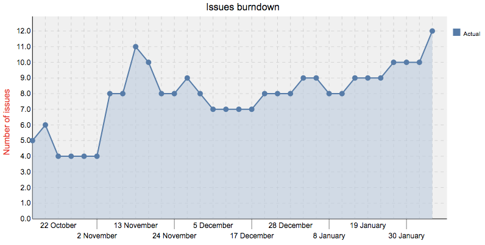

Redmine
Seminarios DI Febrero 2016
Qué es Redmine
Redmine is a flexible project management web application.
— https://www.redmine.com/
Redmine en Cloud-DI
URLs Cloud-DI
Descripción Servicios Cloud-DI: http://edx.di.ual.es
Regístrate y sigue los videotutoriales
Acceso Servicios Cloud-DI: http://cloud.di.ual.es
Redmine-DI
Acceso vía LDAP-DI
Acceso externo a la UAL vía VPN
Proyectos Redmine-DI (now)
Cloud-DI (Gestión incidencias de Cloud-DI)
Acceso como proyecto Redmine
Acceso desde http://cloud.di.ual.es
Todos podéis crear una issue
Técnicos de laboratorio (Gestión de peticiones)
Acceso como proyecto Redmine
Objetivo proyectos actuales
Lista de tareas pendientes
Asignación de tareas
Las tareas quedan documentadas
Evitar email para comunicación sobre tareas
Cualquiera se puede incorporar al proyecto
Y esto, ¿para qué?
Enfoque en docencia
Docencia como proyecto
Cada asignatura tiene su proyecto
Issues: Temas (sesiones), Trabajo autónomo, Entregas, Pruebas, …
Cada alumno tiene su proyecto
Futuro: Posibilidad de propagar tareas de asignaturas a alumnos
Estructura Jerárquica
(Cursos) Asignaturas, Alumnos
Modo de uso
Mi Página
Combinar con notificaciones
Mi Página
Figure 1. Tareas asignadas, solicitadas e informadas
Combinar con notificaciones


Issues
Cada tarea a realizar es una issue
Figure 2. Ejemplo de Lista de issues
Gannt
Figure 3. Diagramas de Gannt
Hoja de horas
Figure 4. Informe personalizado de tiempo dedicado
Plugin Agile

Gráficos Burndown

Figure 5. Mala gestión. Issues incorporadas sobre la marcha
Vamos al lío
Demo